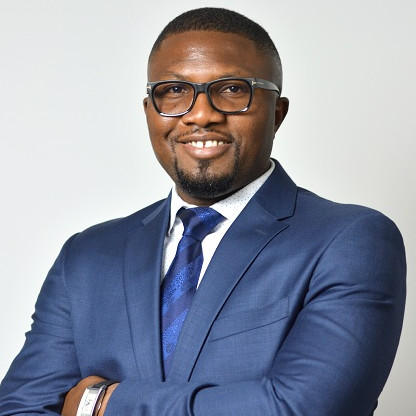

Stan Abada's Resume

Summary
I help create a team dynamics that inspire people to be productive and to achieve personal and company goals respectively.
A team player and a people's person who has the right mentality to lead different functions.
Electrical Engineer with
experience in software, hardware, quality assurance, systems and management of people.
Outstanding people skills including an appreciation for diversity and the ability to work as a team member
Reliable and dedicated
employee with great computer knowledge.
Time management ability, high energy level, a quick learner, and understands the value of
approaching work/projects with enthusiasm.
Always striving to improve and ability to handle multiple tasks simultaneously.
Dependable and understands the importance of co-operating with coworker.
Understands the importance of remaining compassionate and
empathetic when dealing with the problems of others.
Appreciates the importance of basing decisions on sound logic and factual information
necessary for the successful completion of project.
Education
Master of Business Analytics | Wake Forest University | 2022
Certificate in Management Science & Engineering | Stanford University
Master of Business Administration | University of South Florida
Master in Electrical Engineering | Florida Institute of Technology
Bachelors of Electrical Engineering | Florida Institute of Technology
Work Experience
Sr. Technical Program Manager | Very | 07/2023 - Present
- As a Technical Program Manager, I am tasked with working with out teams and clients to develop IoT, mobile, and full-stack products in a consulting capacity.
My responsibilities includes managing budgets, expectations, ensuring customers satisfaction during project builds by using Agile methodology.
- Very is a fully-distributed IoT engineering firm, partnering with our clients to build systems for smart manufacturing, smart energy & utilities,
consumer electronics, and connected wellness. Learn more at verytechnology.com
System Engineering Program Manager | Google Inc | CA | 07/2021 - 03/2023
Technical Program Manager | Carrier Corp | FL | 09/2014 - 07/2021
- Design, implement, and maintain Fire Alarm Detectors and Devices from specifications through production.
- Present project stage gates to top level management
- Project management, electrical design and product agency certification
- Knowledgeable in Agency(UL/ULC, BRE/LPCB, CCCF, FM, CNBOP, e.t.c.) project creation and execution
Optical Systems and Sensors
- Project Manager on New Product Design (NPD) from concept to completion
- Project Lead/Compliance Engineer on Transfer Of Work(TOW) from one manufacturing site to another
LabVIEW Developer/Electrical Engineer | CAE Healthcare Inc | 03/2013 - 07/2014
- Developed Automated Test Fixture utilizing National Instrument LabVIEW and TestStand
- Maintained and update test fixtures remotely as well as for offsite manufacturers when needed
- Developed Test plans for production
- Specified, drew and documented wiring harnesses
Test & Quality Engineer | Consert, Inc | FL | 07/2012 - 01/2013
Software Developer | Innovative Tech by Design | FL | 11/2011 - 07/2012
Test Engineer | Rockwell Collins, Inc | FL | 01/2011 - 12/2011
Skills
Project/Program Management | Strategic Leadership | Budget Management | Data Analytics | Customer relationship Development
Agile Scrum Master | Test Development | Risk Assessments | Process Improvement | Requirement Capture
Activities & Awards
Represented Google as a volunter at Afrotech 2022
National Society of Black Engineers (NSBE)
Florida Tech Scolar-Athlete Award - 2007 - 2009
Full scholarship award for soccer - 2008 - 2011
Lead goal scoring at Florida Tech - 2008 - 2011
Volunteered Coach at AY360 U6
Others